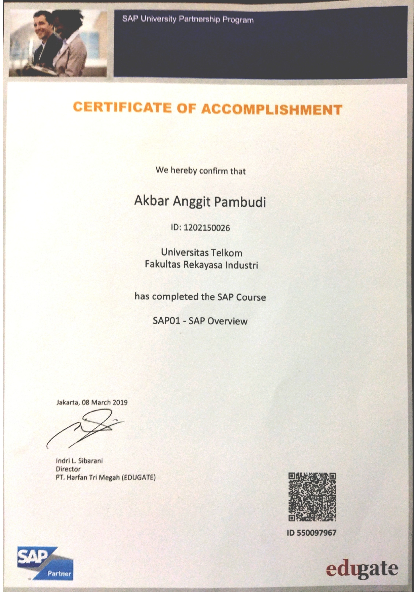
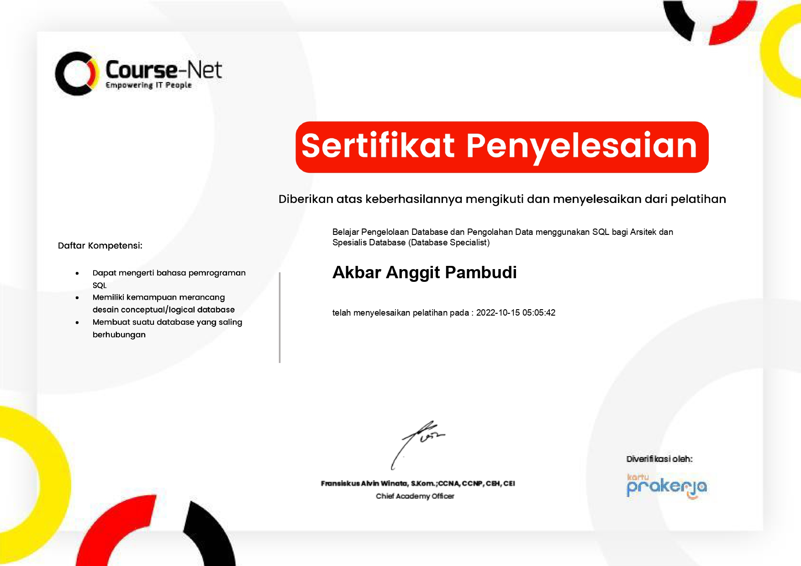
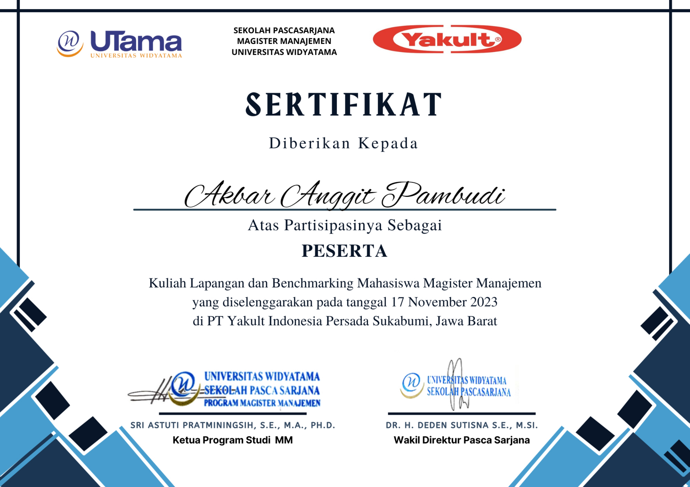
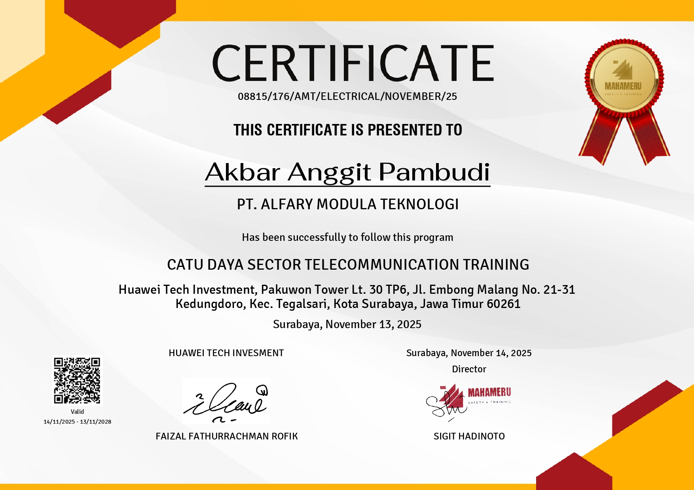
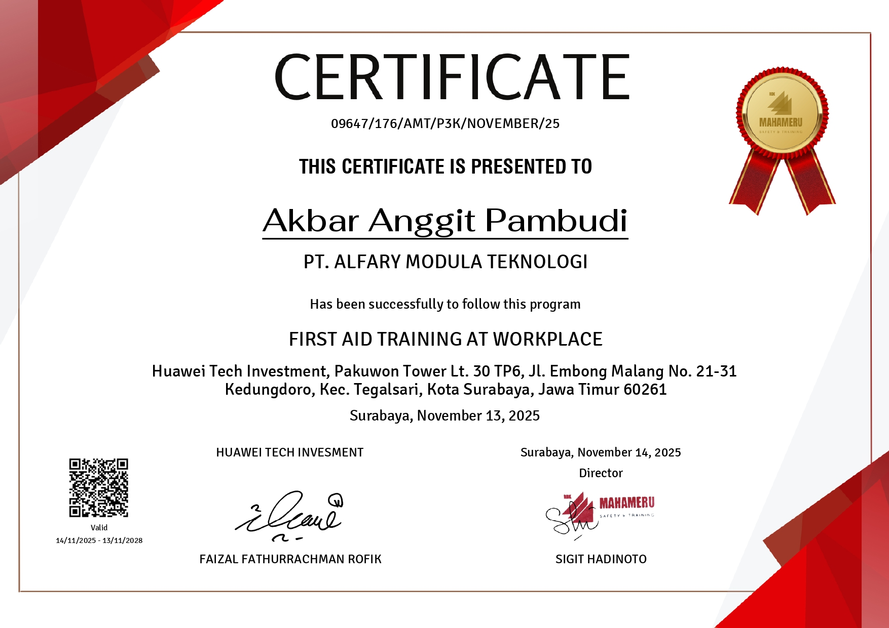
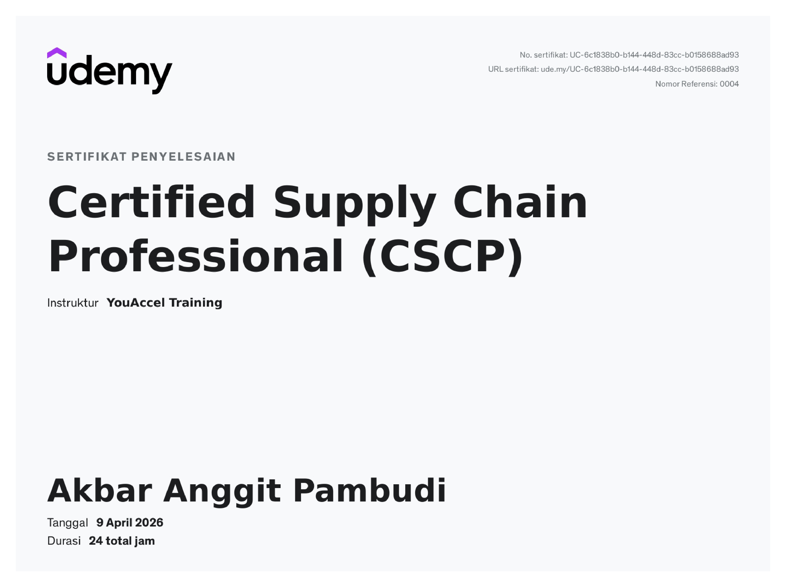
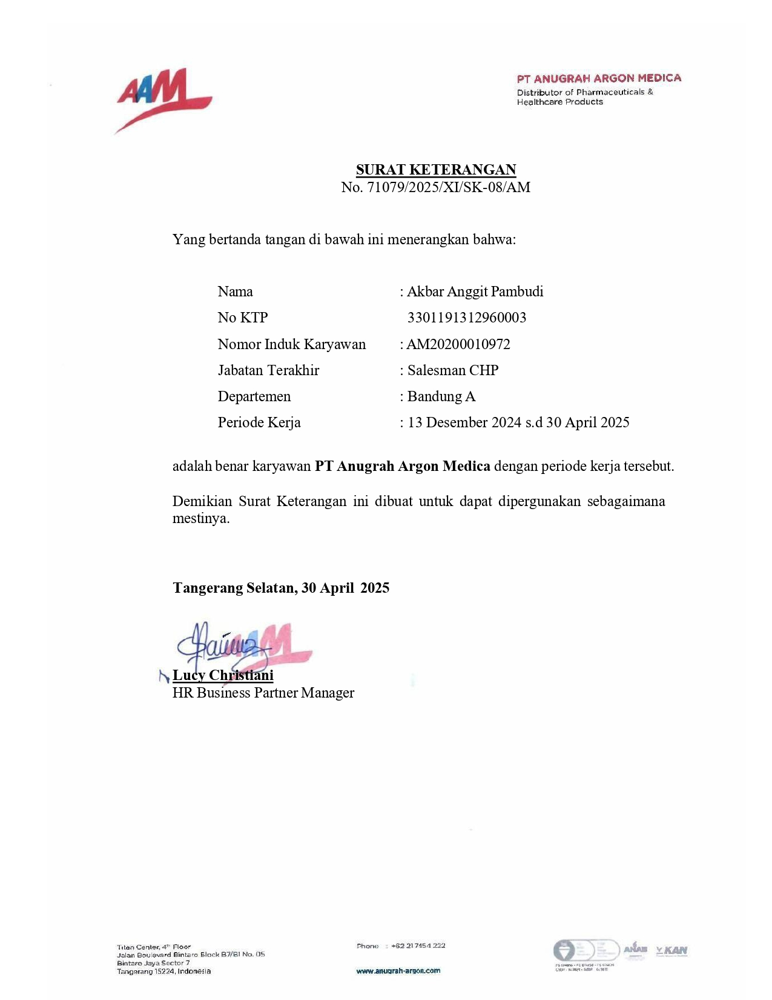

Melalui sertifikasi SAP Fundamental, saya memperoleh pemahaman fundamental mengenai SAP dan bagaimana sistem ERP digunakan untuk mengintegrasikan berbagai fungsi bisnis. Saya mengenal modul-modul utama seperti Finance (FI), Controlling (CO), Materials Management (MM), dan Sales & Distribution (SD), serta memahami bagaimana data mengalir secara terpusat dalam suatu organisasi.

Melalui pelatihan Database Management and Specialist Using SQL, saya mempelajari konsep dasar hingga lanjutan dalam pengelolaan database, termasuk perancangan struktur tabel, penggunaan query SQL (SELECT, JOIN, INSERT, UPDATE, DELETE), serta optimalisasi pengolahan data untuk kebutuhan analisis.

Melalui studi banding di PT Yakult Indonesia Persada Sukabumi, saya memperoleh wawasan mengenai praktik manajemen di industri manufaktur, meliputi perencanaan produksi, pengendalian kualitas, manajemen rantai pasok, serta strategi distribusi produk ke konsumen yang efisien.

Sertifikat Catu Daya Sector Telecommunication Training menunjukkan pemahaman saya terkait sistem catu daya pada infrastruktur telekomunikasi, termasuk distribusi listrik, sistem backup, dan keandalan pasokan energi.

Sertifikasi ini membekali saya dengan keterampilan penting dalam menjaga keselamatan kerja, termasuk kemampuan untuk merespon kondisi darurat, melakukan penanganan awal, serta meningkatkan kesadaran terhadap aspek kesehatan dan keselamatan di tempat kerja.

Melalui program Supply Chain Professional (CSCP), saya mempelajari proses end-to-end supply chain, meliputi demand planning, inventory management, procurement, logistics, serta strategi untuk meningkatkan efisiensi, mengurangi biaya operasional, serta meningkatkan daya saing perusahaan.

Bukti pengalaman kerja sebagai Sales Distributor produk OTC Bayer selama 5 bulan, saya terlibat langsung dalam aktivitas penjualan dan distribusi produk ke pelanggan. Saya juga belajar memahami kebutuhan pasar, membangun hubungan dengan pelanggan, serta menjaga konsistensi pencapaian target penjualan di area yang ditangani.
